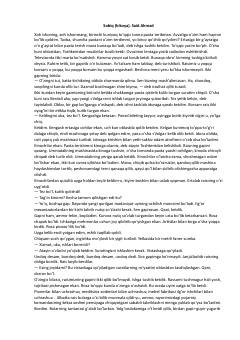

SShon-shuhrat va rasmiyatchilik qurboniga aylangan mexanizator haqidagi qiziqarli va saboq beruvchi hajviy hikoya.
Said Ahmadning ushbu hajviy hikoyasida bir kunda ko'p paxta terib, to'satdan mashhur bo'lib ketgan mexanizator yigitning sarguzashtlari tasvirlanadi. Shon-shuhrat ketidan quvib, turli tadbirlar, uchrashuvlar va majlislardan ortmagan qahramon oxir-oqibat o'zining asosiy ishidan chetda qolib ketadi. Asar soxta obro'parastlik va rasmiyatchilikni qattiq hajv ostiga oladi.